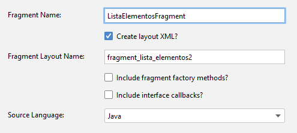
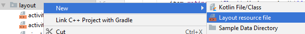
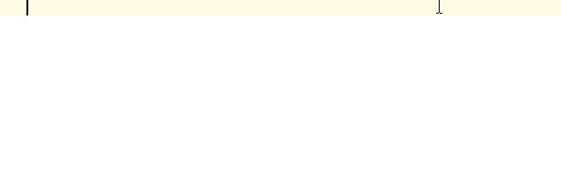
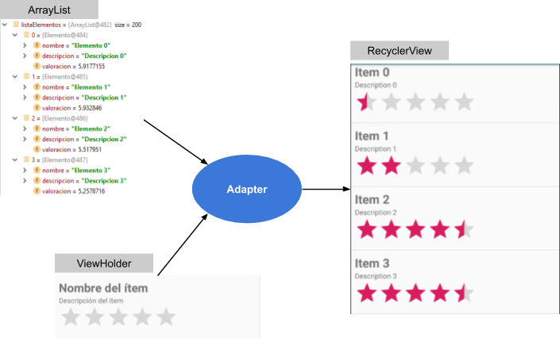

El objetivo de esta práctica es explicar el elemento
El widget
Realizaremos una aplicación que mostrará una lista de
Al hacer click sobre un elemento de la lista, se navegará a otra destinación donde se mostrará el detalle de ese elemento.
https://github.com/gerardfp/recyclerview


Selecciona "Empty Activity" como plantilla para la actividad principal.
Añade las bibliotecas
dependencies { implementation 'androidx.recyclerview:recyclerview:1.0.0' }
- Crea el grafo de navegacion (
res/navigation/navigation.xml ):

- Añade el NavHost al layout de la MainActivity (
res/layout/activity_main.xml ):
<?xml version="1.0" encoding="utf-8"?> <androidx.constraintlayout.widget.ConstraintLayout xmlns:android="http://schemas.android.com/apk/res/android" xmlns:app="http://schemas.android.com/apk/res-auto" xmlns:tools="http://schemas.android.com/tools" android:layout_width="match_parent" android:layout_height="match_parent" tools:context=".MainActivity"> <fragment android:id="@+id/nav_host_fragment" android:name="androidx.navigation.fragment.NavHostFragment" android:layout_width="match_parent" android:layout_height="match_parent" app:defaultNavHost="true" app:layout_constraintLeft_toLeftOf="parent" app:layout_constraintRight_toRightOf="parent" app:layout_constraintTop_toTopOf="parent" app:navGraph="@navigation/navigation" /> </androidx.constraintlayout.widget.ConstraintLayout>
- Añade la destinaciones
ListaElementosFragment yDetalleElementoFragment :



Los datos que queremos mostrar en el RecyclerView los tendremos guardados en un ArrayList.
Para esta práctica rellenaremos el ArrayList con datos generados por código (con un for), pero podrían ser datos descargados de la red, obtenidos de una base de datos, de un fichero JSON, etc. etc. etc.
Este ArrayList contendrá diversos objetos
Crea la clase
public class Elemento { public String nombre; public String descripcion; public float valoracion; }
Las variables de datos y la lógica de la aplicación van el ViewModel, por tanto, es ahí donde crearemos el ArrayList de Items.
- Crea una nueva clase llamada
PrincipalViewModel y añade en ella el ArrayList. En el constructor llamaremos a un método que añada los Elementos en el ArrayList:
import android.app.Application; import java.util.ArrayList; import java.util.List; import androidx.annotation.NonNull; import androidx.lifecycle.AndroidViewModel; import androidx.lifecycle.MutableLiveData; public class PrincipalViewModel extends AndroidViewModel { MutableLiveData<List<Elemento>> listaElementos = new MutableLiveData<>(); MutableLiveData<Elemento> elementoSeleccionado = new MutableLiveData<>(); public PrincipalViewModel(@NonNull Application application) { super(application); rellenarListaElementos(); } public void rellenarListaElementos(){ List<Elemento> elementos = new ArrayList<>(); for (int i = 0; i < 200; i++) { Elemento elemento = new Elemento(); elemento.nombre = "Elemento " + i; elemento.descripcion = "Descripcion " + i; elemento.valoracion = (float) Math.random()*10; elementos.add(elemento); } listaElementos.setValue(elementos); } public void establecerElementoSeleccionado(Elemento elemento){ elementoSeleccionado.setValue(elemento); } }

En este Fragment es donde se mostrará el ReyclerView con la lista de elementos.
Para usar el RecyclerView hay que crear primero dos clases:
- RecyclerView.ViewHolder
- RecyclerView.Adapter
Estas clases las podemos crear en cualquier sitio (en otro fichero, un fichero existente, interno a otra clase, etc..).
Ya que estas clases únicamente las vamos a usar dentro del
Los objetos en cuestión a los que han de acceder són el

Así pues, lo primero que haremos en el
import android.os.Bundle; import android.view.LayoutInflater; import android.view.View; import android.view.ViewGroup; import androidx.annotation.NonNull; import androidx.annotation.Nullable; import androidx.fragment.app.Fragment; import androidx.lifecycle.ViewModelProviders; import androidx.navigation.NavController; import androidx.navigation.Navigation; public class ListaElementosFragment extends Fragment { PrincipalViewModel principalViewModel; NavController navController; public ListaElementosFragment() {} @Override public View onCreateView(LayoutInflater inflater, ViewGroup container, Bundle savedInstanceState) { return inflater.inflate(R.layout.fragment_lista_elementos, container, false); } @Override public void onViewCreated(@NonNull View view, @Nullable Bundle savedInstanceState) { super.onViewCreated(view, savedInstanceState); principalViewModel = ViewModelProviders.of(requireActivity()).get(PrincipalViewModel.class); navController = Navigation.findNavController(view); } }

El ViewHolder és la plantilla de cómo se mostrarán los elementos en el RecyclerView. Es decir, cada elemento del RecyclerView será una copia de la plantilla con los campos rellenados con los elementos del ArrayList.
Para crear el ViewHolder tenemos que crear:
- Un fichero con el layout y
- Una clase que haga el
findViewById() de cada elemento del layout que tenga que ser rellenado con datos.
- Crea un nuevo fichero de layout llamado
(res/layout/viewholder_elemento.xml) :

Este layout será la plantilla para un elemento del RecyclerView. Añadiremos los componentes que necesitemos.
En este caso añadiremos un TextView para el nombre, otro para la descripción y un RatingBar.
<?xml version="1.0" encoding="utf-8"?> <LinearLayout xmlns:android="http://schemas.android.com/apk/res/android" android:orientation="vertical" android:layout_width="match_parent" android:layout_height="wrap_content" android:padding="8dp"> <TextView android:id="@+id/textview_nombre" android:layout_width="match_parent" android:layout_height="wrap_content" android:textSize="24sp" android:textStyle="bold" /> <TextView android:id="@+id/textview_descripcion" android:layout_width="match_parent" android:layout_height="wrap_content"/> <RatingBar android:id="@+id/ratingbar_valoracion" android:numStars="5" android:layout_width="wrap_content" android:layout_height="wrap_content"/> </LinearLayout>
- Crea la classe
ElementoViewHolder :
Esta clase se encargará de hacer elfindViewById() de cada view que haya que rellenar en la plantilla (con los datos de los Ítems del ArrayList).
En nuestra plantilla las views a rellenar son los dos TextView y el RatingBar.
class ElementoViewHolder extends RecyclerView.ViewHolder { TextView nombreTextView, descripcionTextView; RatingBar valoracionRatingBar; ElementoViewHolder(@NonNull View itemView) { super(itemView); nombreTextView = itemView.findViewById(R.id.textview_nombre); descripcionTextView = itemView.findViewById(R.id.textview_descripcion); valoracionRatingBar = itemView.findViewById(R.id.ratingbar_valoracion); } }

El adaptador es el encargado de crear las copias de la plantilla y rellenarlas con los datos.

Crea una nueva clase llamada
class ElementosAdapter extends RecyclerView.Adapter<ElementosAdapter.ElementoViewHolder>{ List<Elemento> elementos; @NonNull @Override public ElementoViewHolder onCreateViewHolder(@NonNull ViewGroup parent, int viewType) { return new ElementoViewHolder(LayoutInflater.from(parent.getContext()).inflate(R.layout.viewholder_elemento, parent, false)); } @Override public void onBindViewHolder(@NonNull ElementoViewHolder holder, final int position) { final Elemento elemento = elementos.get(position); holder.nombreTextView.setText(elemento.nombre); holder.descripcionTextView.setText(elemento.descripcion); holder.valoracionRatingBar.setRating(elemento.valoracion); holder.valoracionRatingBar.setOnRatingBarChangeListener(new RatingBar.OnRatingBarChangeListener() { @Override public void onRatingChanged(RatingBar ratingBar, float v, boolean b) { elemento.valoracion = v; } }); holder.itemView.setOnClickListener(new View.OnClickListener() { @Override public void onClick(View view) { principalViewModel.establecerElementoSeleccionado(elemento); navController.navigate(R.id.detalleElementoFragment); } }); } @Override public int getItemCount() { return elementos == null ? 0 : elementos.size(); } public void establecerListaElementos(List<Elemento> elementos){ this.elementos = elementos; notifyDataSetChanged(); } class ElementoViewHolder extends RecyclerView.ViewHolder { TextView nombreTextView, descripcionTextView; RatingBar valoracionRatingBar; public ElementoViewHolder(@NonNull View itemView) { super(itemView); nombreTextView = itemView.findViewById(R.id.textview_nombre); descripcionTextView = itemView.findViewById(R.id.textview_descripcion); valoracionRatingBar = itemView.findViewById(R.id.ratingbar_valoracion); } } }

El Adapter tiene 3 métodos:
onCreateViewHolder() : Este método es llamado por el RecyclerView cada vez que hay que crear una nueva copia de la plantilla para mostrar un nuevo elemento.
Dentro de este método usamos elLayoutInflater para crear una copia de la plantillaviewholder_elemento.xml .
Se retorna un objeto de claseElementoViewHolder , al que le pasamos la copia de la plantilla para que haga losfindViewById() .onBindViewHolder() : Este método es llamado por el RecyclerView con el fin de rellenar una copia de la plantilla.
La variableholder que nos pasan como parámetro es el ViewHolder (la copia de la plantilla) que hay que rellenar, y la variableposition es la posición que ocupa dentro del RecyclerView.
En este método hacemos 4 cosas:
- Obtenemos el
Elemento del ArrayList que ocupa laposition que nos ha pasado el RecyclerView (es decir, la posicion del ViewHolder que hay que rellenar). - Rellenamos los TextView y el RatingBar del
ViewHolder con los datos delElemento que hemos sacado del ArrayList. - Establecemos el listener para el RatingBar que actualizará la valoración del Elemento.
- Establecemos un listener para todo el ViewHolder (la variable
itemView ), para que cuando se haga click en él, navegue alDetalleElementoFragment , donde se mostrará el detalle del elemento.
Previamente, habremos guardado elElemento en la variableelementoSeleccionado del ViewModel.
getItemCount() : Este método es llamado por el RecyclerView con el fin de saber cuántos elementos se tienen que mostrar. En nuestro caso retornamos elsize() del ArrayList, o0 si el ArrayList esnull .
Hemos añadido un método extra
LinearLayoutManager
| GridLayoutManager | StaggeredGridLayoutManager |

El LayoutManager que deseamos utilizar lo podemos establecer con el atributo XML
app:layoutManager="androidx.recyclerview.widget.LinearLayoutManager"
app:layoutManager="androidx.recyclerview.widget.GridLayoutManager" app:spanCount="3"
app:layoutManager="androidx.recyclerview.widget.StaggeredGridLayoutManager" app:spanCount="3"
Para esta práctica usaremos el
Añade el elemento
<androidx.recyclerview.widget.RecyclerView android:id="@+id/item_list" android:layout_width="match_parent" android:layout_height="wrap_content" app:layoutManager="androidx.recyclerview.widget.LinearLayoutManager" />
En el método
- Recuperar el RecyclerView del XML con
findViewById() - Establecerle el adaptador
ElementosAdapter (el encargado de rellenar el RecyclerView) - Observar el ArrayList de elementos (
listaElementos ) del ViewModel, y establecerlo en el adaptador
public class ListaElementosFragment extends Fragment { PrincipalViewModel principalViewModel; NavController navController; ElementosAdapter elementosAdapter; public ListaElementosFragment() {} @Override public View onCreateView(LayoutInflater inflater, ViewGroup container, Bundle savedInstanceState) { return inflater.inflate(R.layout.fragment_lista_elementos, container, false); } @Override public void onViewCreated(@NonNull View view, @Nullable Bundle savedInstanceState) { super.onViewCreated(view, savedInstanceState); principalViewModel = ViewModelProviders.of(requireActivity()).get(PrincipalViewModel.class); navController = Navigation.findNavController(view); RecyclerView elementosRecyclerView = view.findViewById(R.id.recyclerview_listaElementos); elementosRecyclerView.addItemDecoration(new DividerItemDecoration(elementosRecyclerView.getContext(), DividerItemDecoration.VERTICAL)); elementosAdapter = new ElementosAdapter(); elementosRecyclerView.setAdapter(elementosAdapter); principalViewModel.listaElementos.observe(getViewLifecycleOwner(), new Observer<List<Elemento>>() { @Override public void onChanged(List<Elemento> elementos) { elementosAdapter.establecerListaElementos(elementos); } }); } // class ElementosAdapter ... }
En la destinación
import android.os.Bundle; import androidx.annotation.NonNull; import androidx.annotation.Nullable; import androidx.fragment.app.Fragment; import androidx.lifecycle.Observer; import androidx.lifecycle.ViewModelProviders; import android.view.LayoutInflater; import android.view.View; import android.view.ViewGroup; import android.widget.RatingBar; import android.widget.TextView; public class DetalleElementoFragment extends Fragment { PrincipalViewModel principalViewModel; TextView nombreTextView; TextView descripcionTextView; RatingBar valoracionRatingBar; public DetalleElementoFragment() { } @Override public View onCreateView(LayoutInflater inflater, ViewGroup container, Bundle savedInstanceState) { return inflater.inflate(R.layout.fragment_detalle_elemento, container, false); } @Override public void onViewCreated(@NonNull final View view, @Nullable Bundle savedInstanceState) { super.onViewCreated(view, savedInstanceState); principalViewModel = ViewModelProviders.of(requireActivity()).get(PrincipalViewModel.class); nombreTextView = view.findViewById(R.id.textview_nombre); descripcionTextView = view.findViewById(R.id.textview_descripcion); valoracionRatingBar = view.findViewById(R.id.ratingbar_valoracion); principalViewModel.elementoSeleccionado.observe(getViewLifecycleOwner(), new Observer<Elemento>() { @Override public void onChanged(final Elemento elemento) { if(elemento == null) return; nombreTextView.setText(elemento.nombre); descripcionTextView.setText(elemento.descripcion); valoracionRatingBar.setRating(elemento.valoracion); valoracionRatingBar.setOnRatingBarChangeListener(new RatingBar.OnRatingBarChangeListener() { @Override public void onRatingChanged(RatingBar ratingBar, float v, boolean b) { elemento.valoracion = v; } }); } }); } }
<?xml version="1.0" encoding="utf-8"?> <FrameLayout xmlns:android="http://schemas.android.com/apk/res/android" xmlns:tools="http://schemas.android.com/tools" android:layout_width="match_parent" android:layout_height="match_parent" tools:context=".ItemDetailFragment"> <LinearLayout android:layout_width="match_parent" android:layout_height="wrap_content" android:orientation="vertical"> <TextView android:id="@+id/name" android:gravity="center" android:textSize="48sp" android:textStyle="bold" android:layout_width="match_parent" android:layout_height="wrap_content" /> <RatingBar android:id="@+id/rating" android:layout_width="wrap_content" android:layout_height="wrap_content" /> <TextView android:id="@+id/desc" android:textSize="24sp" android:layout_width="match_parent" android:layout_height="wrap_content" /> </LinearLayout> </FrameLayout>